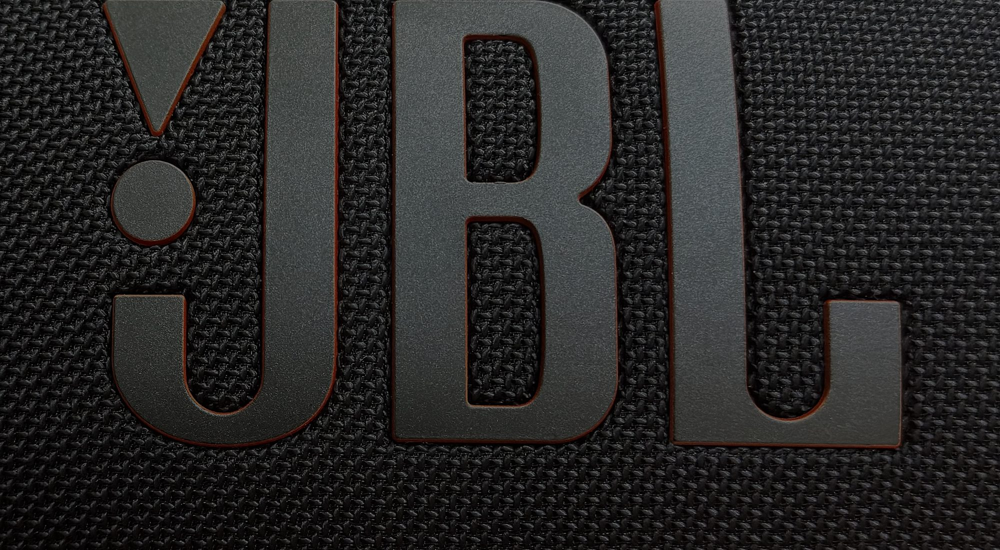
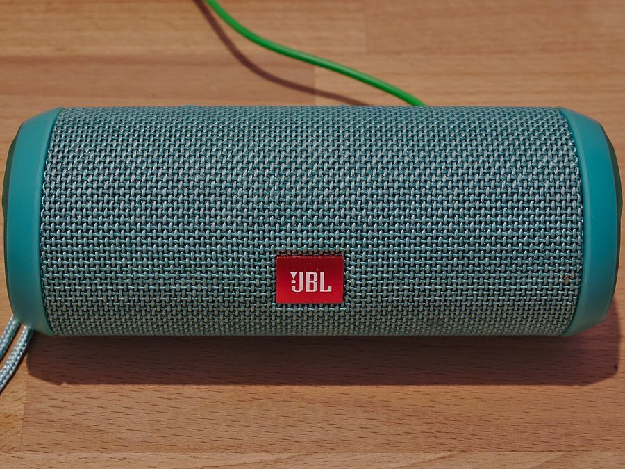
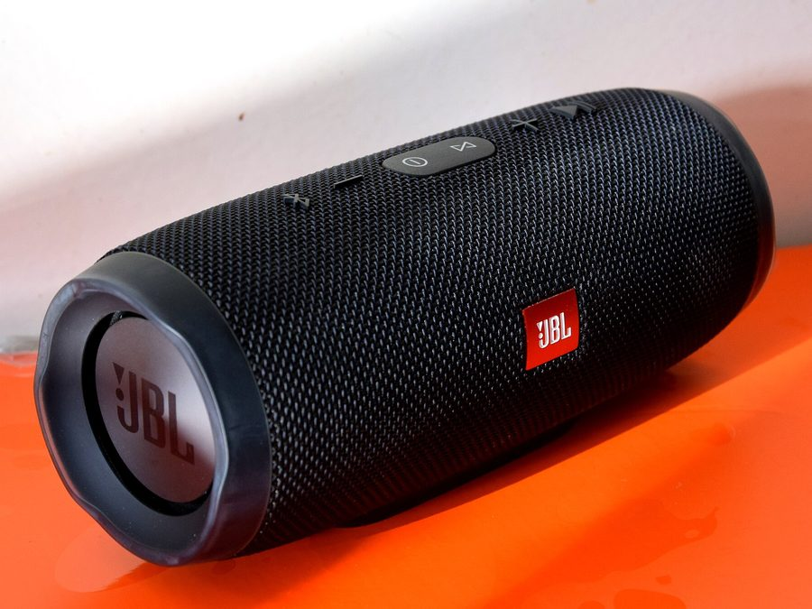
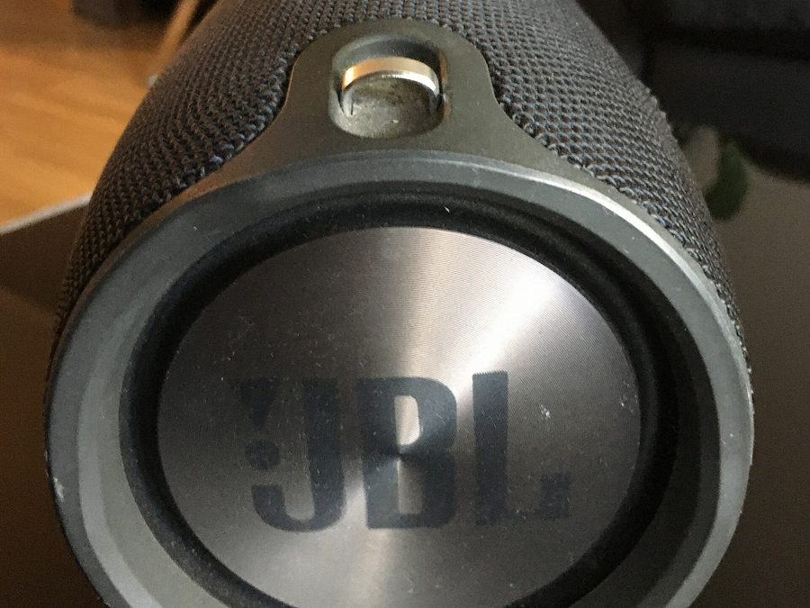
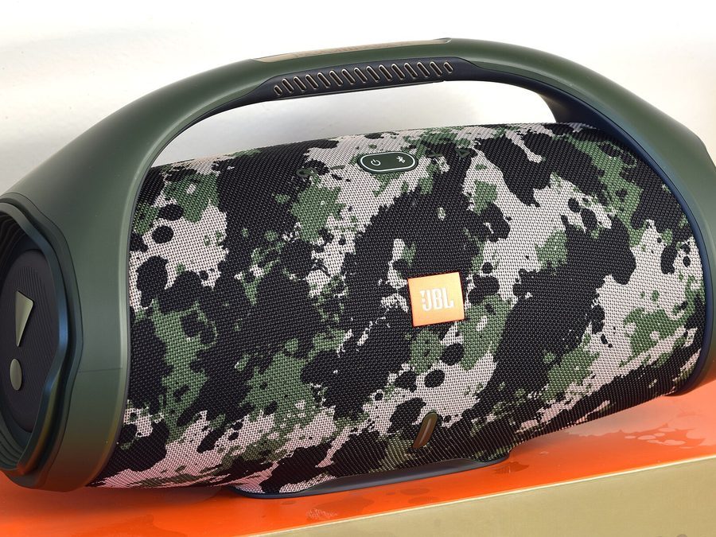
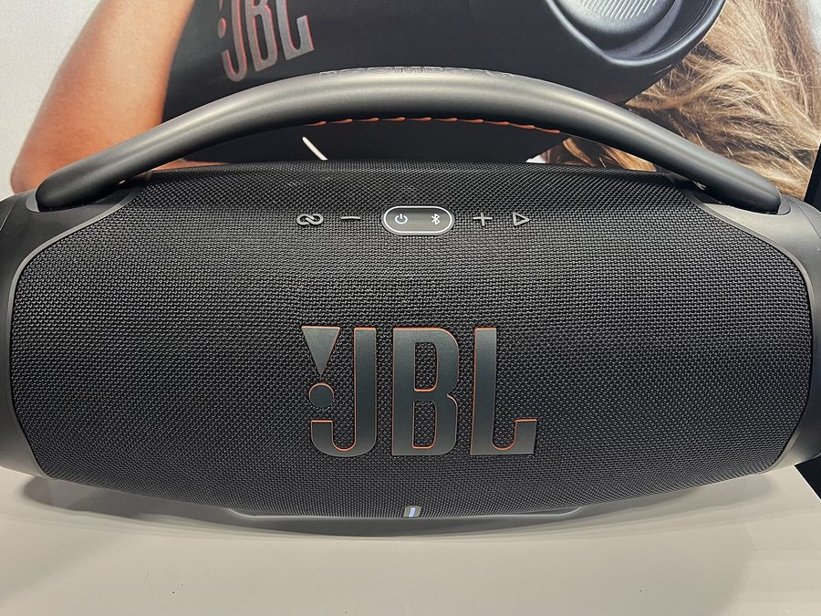
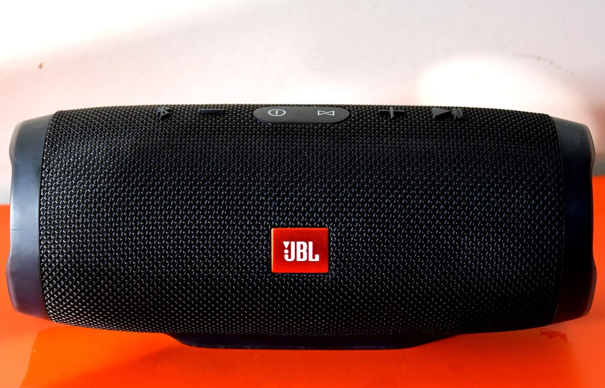
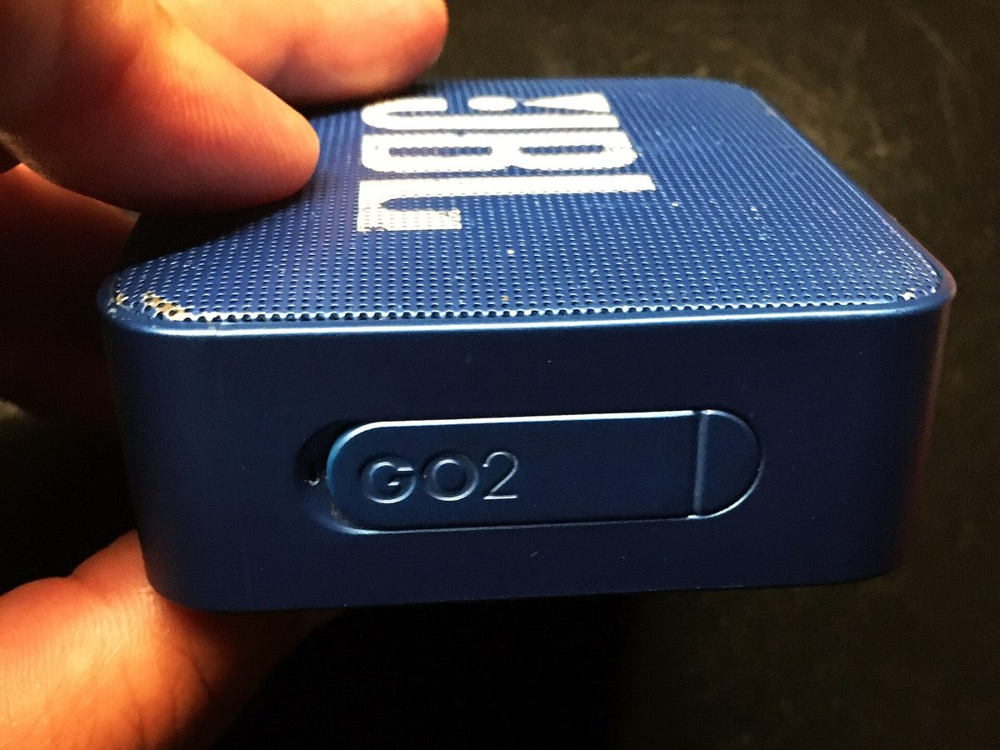
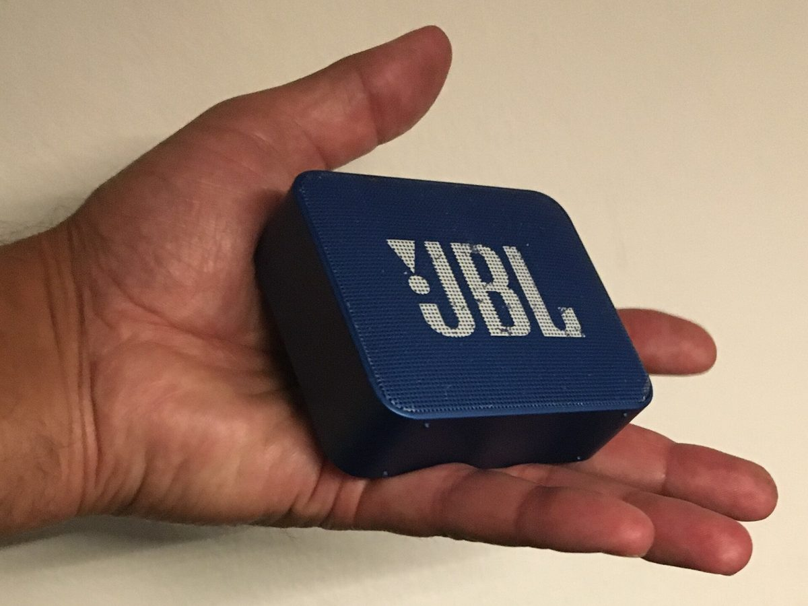
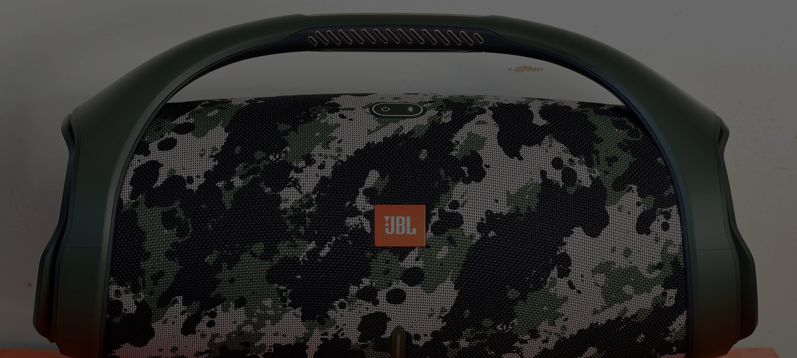

Ultra compacto
JBL Go 2
- Potencia3 W
- Batería5 h
- ResistenciaIPX7

Audio portátil · Desde 1946
Graves que empujan el pecho, agudos que no se rompen y una carcasa que aguanta la playa, la lluvia y la fiesta.
100millones
Parlantes portátiles vendidos en el mundo
34,2%
Del mercado mundial de parlantes portátiles
5años
Seguidos como marca líder de la categoría
1946
Año en que James B. Lansing fundó la marca
Cifras publicadas por Harman International en septiembre de 2019, al anunciar los 100 millones de unidades en la feria IFA de Berlín.
La marca
Desde 1946 construimos altavoces para los que no se conforman con escuchar. El mismo sonido que llena estadios y salas de cine cabe hoy en una mano.
James B. Lansing Sound
Los parlantes
Seis modelos, del que cabe en el bolsillo al que llena una azotea. Todos con JBL Pro Sound.
Ultra compacto

Portátil

Portátil · Powerbank

Portátil con correa

Fiesta
El más potente

Fiesta

La tecnología
La misma firma sonora de los estudios de grabación, calibrada para un equipo que cabe en una mochila.
Los modelos IP67 aguantan el polvo y hasta 30 minutos sumergidos a un metro.
Batería que cubre el viaje de ida, la fiesta y el regreso sin buscar un enchufe.
Conecta varios parlantes compatibles y conviértelos en un solo sistema.
La resistencia
La certificación no es un adorno: cada cifra del código IP describe una prueba concreta de laboratorio. Por eso un JBL se lleva a la playa sin pensarlo, se enjuaga bajo el grifo cuando vuelve lleno de arena y sigue sonando igual.
La clave está en el sellado: los puertos de carga quedan bajo una tapa de goma y la rejilla es de tejido tratado, así que ni el polvo ni el agua llegan al altavoz.


La practicidad
El Go 2 cabe entero en la palma de la mano y pesa menos de 200 gramos: cuelga de la correa de una mochila, entra en el bolsillo de un pantalón y no se nota hasta que suena.
Esa es la idea que sostiene toda la línea. El mismo altavoz que te acompaña en el bus se convierte en un Boombox 3 de 180 vatios cuando la reunión crece, sin cambiar de marca ni de forma de usarlo.
3 W
JBL Go 2
Cabe en una mano
180 W
JBL Boombox 3
Llena una azotea

Encuentra el parlante que te acompaña en las tiendas autorizadas JBL de todo el país.
Explorar la línea completa